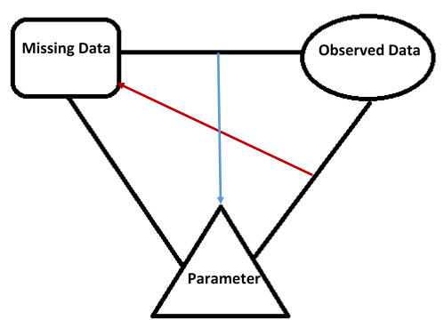
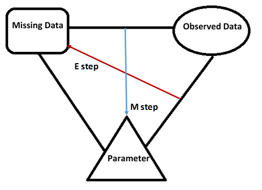
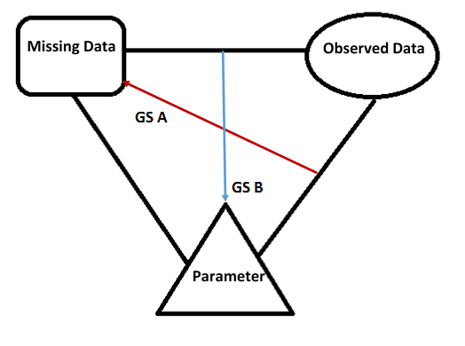
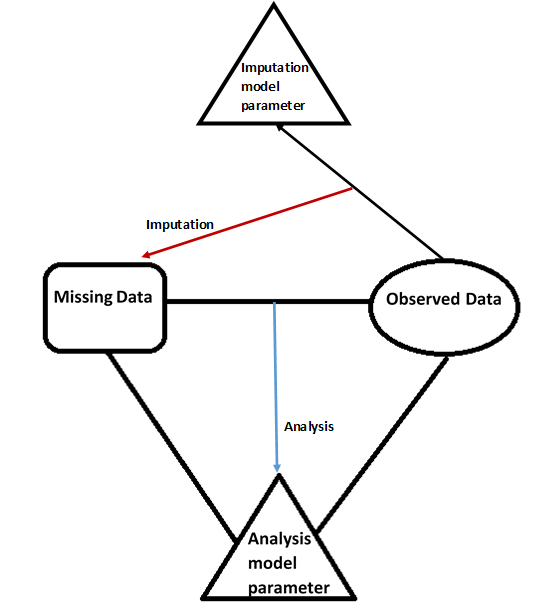

7.1 The assumptions behind identification
The preceding chapters approach the same problem through different mathematical objects: an observed-data likelihood, a posterior distribution, or an estimating equation. This final chapter places those objects in one argument. The first question is what identifies the target from the observed records. The second is which model restrictions are acceptable. Only then does the choice of an optimization, simulation, or weighting algorithm become meaningful.
Keep the running example \(O=(X,R,RY)\), where \(X\) is fully observed and \(\theta=EY\). Write \(\pi_0(x,y)=P(R=1\mid X=x,Y=y)\). Under MAR it reduces to \(\pi_0(x)\); under MCAR it is constant. These statements refer to the actual observation process in relation to the chosen full data, not to whether a missingness pattern looks irregular in a spreadsheet.
The three missingness mechanisms place progressively weaker restrictions on the observation process. MCAR requires independence from both recorded and unrecorded values; MAR permits dependence on recorded information; NMAR allows additional dependence on unavailable values. Under MCAR, complete cases form a random subsample, so a valid full-data procedure remains valid when applied to them. Randomly selecting a subset for full measurement provides a clear example. Accidental loss of records has the same interpretation only if the loss is actually independent of the variables under study.
Validity does not make complete-case analysis fully informative. Even under MCAR, an incomplete record may contain information about marginal distributions or parameter components, and discarding it can reduce precision. Treating MCAR within the broader MAR framework allows that partial information to contribute. Under MAR, however, complete cases can have a different marginal composition from the population. Methods must then account for the observed variables on which selection depends; applying an arbitrary full-data procedure to complete cases no longer has a general justification.
Likelihood factorization provides one route to using all recorded information under MAR. With distinct parameters and the relevant ignorability conditions, inference for the data model can use the observed-data likelihood without specifying the response mechanism. Its integrals over unavailable values explain why EM and posterior simulation recur throughout the course. Under NMAR, the response-mechanism factor generally remains inside those integrals. The resulting difficulty is not merely that computation becomes more involved: unrestricted dependence on unobserved values can also prevent the observations from identifying the target.
Identification asks whether different values of the target can produce the same observed-data distribution within the assumed model. If they can, an arbitrarily large sample of those observations cannot distinguish them. Point identification is therefore a prerequisite for consistent point estimation over the model, although bounds, sensitivity analysis, and inference using additional information remain possible without it. In the two-pattern MAR setting, complete cases represent the conditional distribution within levels of the always-observed variables. Positivity then permits those conditional distributions to be combined with the observed covariate distribution, as established in Chapter 1.
Without an identifying restriction, NMAR permits the missing values to differ from the observed ones in ways the data do not reveal. A useful analysis therefore states which assumptions supply the missing information and examines how conclusions change when they are varied. One approach begins with MAR and then considers parametric selection models for sensitivity analysis. Each such model still needs its own identification argument: adding a parameterization does not automatically make the target identifiable. The following calculation expresses the same issue directly in terms of conditional means.
An identification argument that unifies the course
Under MAR and positivity,
Both distributions on the right are learned from observed quantities. The same target also satisfies \(E\{RY/\pi_0(X)\}=\theta\). These are two representations of one identified functional. Outcome regression estimates the conditional mean in the first representation; IPW estimates the selection probabilities in the second; augmentation combines both.
Without MAR, write \(m_r(x)=E(Y\mid X=x,R=r)\) and \(\rho(x)=P(R=1\mid X=x)\). Then
The observed records identify \(\rho\) and \(m_1\), but not generally \(m_0\). An algorithm cannot supply this missing identification. One can impose scientifically supported restrictions, use external information, derive bounds, or vary a sensitivity parameter such as \(m_0(x)-m_1(x)\). Nonidentifiability prevents point identification under the stated model; it does not prevent all useful statistical analysis. Even a restrictive normal–logistic selection model requires an explicit identifiability check, as Chapter 1 demonstrates.
7.2 Comparing likelihood-based methods
The three likelihood-based procedures have related inputs but different outputs. Maximum likelihood produces a parameter estimate and a sampling covariance. Bayesian inference produces a posterior distribution conditional on a prior and model. Multiple imputation produces completed datasets whose separate analyses are pooled. A good implementation must propagate uncertainty appropriate to its chosen output.
Maximum likelihood, Bayesian analysis, and multiple imputation all connect inference to an observed-data model, but they summarize uncertainty in different ways. When the observed-data likelihood is tractable, it can be optimized directly or combined with a prior. When it contains difficult sums or integrals, a completed-data representation may make the calculation easier. The incomplete observation is then connected to a distribution of possible completions, and complete-data methods can be used within an iterative or predictive construction. The central requirement is to retain the uncertainty in that connection.
Replacing missing entries by single estimated values does not generally meet that requirement. The conditional distribution of the missing values depends on the full-data model and its unknown parameters, while estimation of those parameters depends on the information available about the missing values. These two dependencies form the loop illustrated below. A sound method resolves it by taking conditional expectations or by sampling from conditional distributions, rather than treating one chosen completion as if it were the original dataset. EM and data augmentation implement these alternatives for different inferential targets.
{kind=link}

EM resolves the loop through conditional expectations and optimization. In the E step, the current parameter determines the distribution of the missing data given the observations; averaging the complete-data log likelihood under that distribution produces the \(Q\) function. In the M step, the candidate parameter is varied to maximize \(Q\). The red and blue arrows in the next figure represent these two operations. They act on a function of the missing values, so every moment required by that function must be retained. This is why an expected quadratic term cannot generally be replaced by the square of an expected missing value.
{kind=link}

The essential EM formula is
The current parameter determines the conditional expectation; the candidate parameter is varied in the maximization. Conditional second moments and cross products must be included whenever the complete-data log likelihood contains them. Substituting conditional means into a nonlinear expression is not the E step. The increase in observed log likelihood follows from the conditional Kullback–Leibler identity established in Chapter 2. It gives monotonic ascent, not a guarantee of the global maximum. Standard errors require observed information, for example through Louis’ identity or supplemented EM, rather than the curvature of a completed-data likelihood with imputed values held fixed.
Data augmentation uses the same conditional relationships for simulation. Under an ignorable model, its two updates are
After adequate convergence, retained parameter draws describe \([\theta\mid D_{\mathrm{obs}}]\), while retained missing-value draws describe \([D_{\mathrm{mis}}\mid D_{\mathrm{obs}}]\). The latter can be combined with the unchanged observed values to form imputed datasets. The red and blue arrows therefore support both Bayesian inference and multiple imputation; the difference is which marginal output is retained and how it is subsequently analyzed.
{kind=link}

In data augmentation the same two conditional relationships define a Markov chain with invariant joint posterior \(p(\theta,D_{\mathrm{mis}}\mid D_{\mathrm{obs}})\). Marginalizing its retained parameter draws gives Bayesian inference; marginalizing its missing-value draws gives posterior predictive imputation. A chain must mix adequately, and retained draws are generally correlated. Multiple imputation pooling additionally requires an appropriate complete-data analysis and uncertainty calculation; merely producing several completed files does not ensure valid inference.
Sometimes the simulation can be organized without a long alternating loop. A convenient imputation model may permit direct draws of its parameters from their observed-data posterior, followed by direct conditional draws of the missing values. The imputation map \((D_{\mathrm{obs}},\theta^*)\mapsto D_{\mathrm{mis}}\) is then separated from the analysis map \((D_{\mathrm{obs}},D_{\mathrm{mis}})\mapsto\theta\). The monotone normal-regression construction in Chapter 5 illustrates this arrangement. It does not require the imputation and analysis models to be written identically, but their relationship still matters for validity; computational convenience alone does not establish congeniality.
{kind=link}

A shared normal example
Suppose \(Y\mid X\sim N(\beta^TX,\sigma^2)\) and response is MAR given \(X\). For an unobserved outcome, an EM E step supplies
A Bayesian or proper predictive-imputation step instead draws \((\beta,\sigma^2)\) from its posterior and then draws \(Y=\beta^TX+\sigma\varepsilon\) with \(\varepsilon\sim N(0,1)\). The second moment in EM and the residual draw in simulation represent uncertainty in the unobserved outcome in different calculations. Drawing regression parameters supplies another layer of predictive uncertainty. This is why deterministic regression imputation followed by an ordinary complete-data standard error is not interchangeable with either procedure.
A convenient imputation model need not equal the analysis model, but the two should preserve the features relevant to the target. Congeniality is not decided solely by comparing model names. For example, an imputation regression omitting an interaction central to the analysis can erase that interaction from the imputed records. Monotone patterns sometimes allow direct posterior draws from successive regressions; arbitrary patterns may require iteration. Computational convenience is one consideration alongside model adequacy.
7.3 Weighting and double robustness
The likelihood-based methods for MAR data basically ignore the missing data mechanism when making inference about a parameter from the sampling distribution \(p_Y(y;\theta)\). On the contrary, the inverse probability weighting (IPW) uses information on the missingness mechanism to construct \(M\) estimators. This is in violation of the Likelihood Principle, which states that all information about a parameter is contained in its likelihood function and hence dictates that inference be the same for two models giving rise to the same likelihood (or proportional likelihoods). To see the violation, we use the old example where \(Y=(X, Y_2)\), \(Y_2\) is possibly missing, the parameter of interest is \(\theta:=EY_2\), and the distribution of \(Y\) is left nonparametric.
Write the selection probability function as
and suppose we have two models with known selection probabilities \(\pi=\pi_0, \pi_0^*\), respectively, where \(\pi_0\) and \(\pi_0^*\) are two known functions. Because of likelihood factorization under MAR, these two models have proportional likelihoods with regard to \(\theta\). So by the Principle, inference should be the same. However, the IPW estimators for the two models are clearly different, as they are given by
respectively.
Robins and Ritov (1997) made a strong case in challenging the once axiomatic Principle from an angle of the curse of dimensionality. Their argument highlights how difficult outcome regression can be over broad high-dimensional model classes when observation probabilities are known. The following discussion is a qualitative explanation, not a universal finite-sample ordering of estimators. Any estimator that conforms to the Principle would inevitably estimate the function \(\mu(X):=E[Y_2\mid X]\). Because of the curse of dimensionality, however, nonparametric estimation of \(\mu\) is infeasible in small- to medium-sized samples when \(X\) is high-dimensional and contains multiple continuous components. On the other hand, IPW can exploit known selection probabilities without fitting a high-dimensional outcome model, provided its weights and moments are well behaved.
The likelihood-principle discussion distinguishes likelihood evidence from repeated-sampling calibration under a known observation design. If two known selection functions multiply the data-model likelihood by different parameter-free factors, the likelihoods for the data-model parameter are proportional. An IPW procedure nevertheless uses the actual selection probabilities and may therefore return different estimates. The example illustrates a conceptual distinction; it does not assert that every likelihood-based estimator performs badly or that every IPW estimator performs well in finite samples.
High-dimensional outcome regression can be difficult without smoothness, sparsity, or other structure. Known, well-behaved sampling probabilities permit an unbiased weighted mean without estimating that outcome regression. Conversely, extreme weights may make the mean highly variable. Which method is useful depends on available structure and information. Double robustness provides a consistency guarantee under a union of models; efficiency gains require further conditions, especially adequate nuisance estimation and positivity.
Known observation probabilities can make weighting particularly useful in a study with missingness by design, especially when the full joint distribution is difficult to model. Related weighting constructions also support marginal causal analyses under the requisite treatment and confounding assumptions (Robins et al., 2000; Hernán et al., 2001). Augmentation adds outcome-model information, providing a second route to consistency and potential efficiency gains when the nuisance functions are suitably estimated. The binary-response and monotone-dropout cases developed here provide the basic examples. Nonmonotone MAR and NMAR require further identification and modeling arguments, several of which are represented in the reading list at the end of the chapter.
Putting the methods side by side
For the running mean example, the three basic estimates are
The first depends on a suitable outcome regression, the second on a suitable observation model, and the third is consistent if either is correct under the conditions established in Chapter 6. All three here rely on MAR identification. Double robustness is not a substitute for a sensitivity analysis about unobserved drivers of missingness.
An analysis can now be planned in a reproducible sequence. State the target population and parameter. Record the full-data variables, observed patterns, and timing of measurements. Explain the missingness and positivity assumptions. Choose and justify the outcome, covariate, and observation models actually required by the method. Implement the associated computation and inspect convergence or numerical stability. Calculate uncertainty including nuisance fitting, missing-value uncertainty, and any material simulation error. Finally, assess how substantive conclusions change under plausible alternative identifying assumptions.
Questions for synthesis
Explain why MAR can invalidate a complete-case mean while preserving a correctly specified conditional response regression. Derive the normal example’s second conditional moment and compare it with the square of its first moment. Show how the DR bias identity becomes a product of two nuisance errors. For monotone dropout, explain why a subject observed only through an intermediate visit contributes to sequential augmentation. For a nonidentified selection model, describe what additional information would distinguish identification from merely choosing one numerical optimizer solution.
7.4 Further reading
The following reading list records the directions highlighted in the original lectures. Its dates and descriptions belong to that historical course context; it is not an exhaustive account of subsequent research. Nonmonotone patterns, shadow variables, instrumental variables, multiple robustness, and causal inference each change the identifying information or the structure of the estimating equations. They extend the course’s questions rather than bypassing the need to state assumptions.
Non-monotone missingness: Sun and Tchetgen Tchetgen (2017; IPW for non-monotone MAR): NMAR: Miao, W. and Tchetgen Tchetgen (2017; shadow variable for NMAR) Sun et al. (2016; instrumental variables for NMAR) Multiple robustness: Han and Wang (2013; basic theory) Han (2016; multiple robustness in longitudinal data) Causal inference: Hernán and Robins (2017) Causal inference. Imbens and Rubin (2015) Causal inference in statistics, social, and biomedical sciences. van der Laan and Rose (2011). Targeted learning: causal inference for observational and experimental data. Pearl (2009) Causality.
7.5 References
Han, P. (2016). Intrinsic efficiency and multiple robustness in longitudinal studies with drop-out. Biometrika.
Han, P. & Wang, L. (2013). Estimation with missing data: beyond double robustness. Biometrika.
Hernán, M. A., Brumback, B., & Robins, J. M. (2001). Marginal structural models to estimate the joint causal effect of nonrandomized treatments. Journal of the American Statistical Association, 96, 440-448.
Hernán MA, Robins JM (2017). Causal Inference. Boca Raton: Chapman & Hall/CRC, forthcoming.
Imbens, G. W. & Rubin, D. B. (2015). Causal Inference in Statistics, Social, and Biomedical Sciences. Cambridge University Press.
Pearl, J. (2009). Causality. Cambridge University Press.
Miao, W. & Tchetgen, E. J. T. (2017). On varieties of doubly robust estimators under missingness not at random with a shadow variable. Biometrika.
Robins, J. M., Hernán, M. A., & Brumback, B. (2000). Marginal structural models and causal inference in epidemiology.
Sun, B., Liu, L., Miao, W., Wirth, K., Robins, J., & Tchetgen, E. T. (2016). Semiparametric Estimation with Data Missing Not at Random Using an Instrumental Variable. arXiv preprint arXiv:1607.03197.
Sun, B. & Tchetgen Tchetgen, E. J. (2017). On Inverse Probability Weighting for Nonmonotone Missing at Random Data. Journal of the American Statistical Association, In press.
van der Laan, M. J. & Rose, S. (2011). Targeted Learning: Causal Inference for Observational and Experimental Data. Springer Science & Business Media.
DISCUSSION
Comments and questions
Share questions, corrections, and suggestions about this chapter or the book.